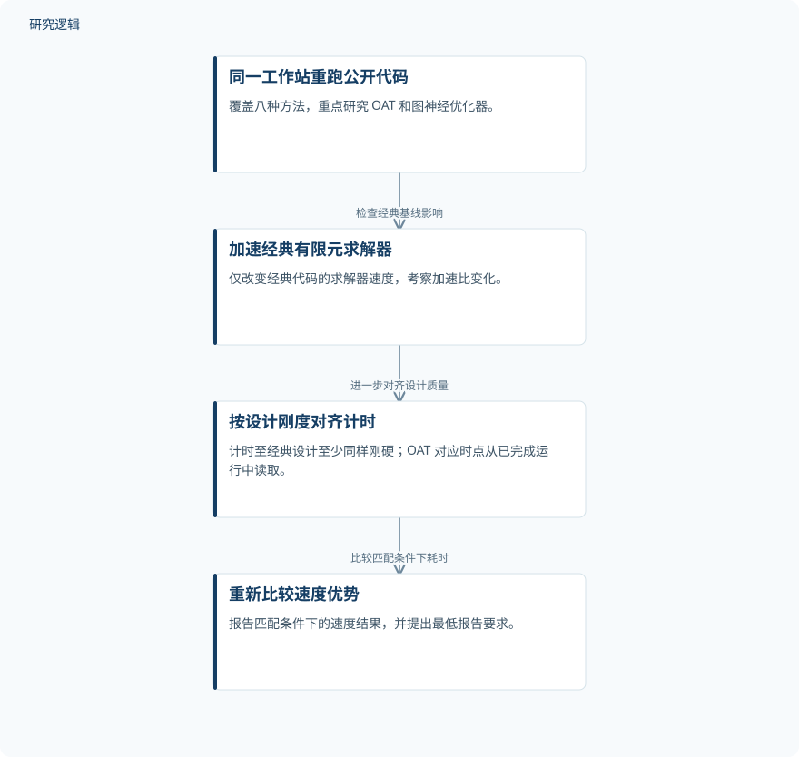

摘要解读
经典基线如何影响拓扑优化中的机器学习加速宣称
How the Classical Baseline Shapes Machine-Learning Speed Claims in Topology Optimization
解读更新 2026-10-17 10:16 · 依据公开摘要整理，未核验全文细节
机器学习做拓扑优化，到底快在算法，还是快在比较口径？这项研究通过重跑公开代码、加速经典求解器并对齐设计刚度，说明一个关键问题：加速比既取决于学习方法，也取决于经典基线和设计质量是否公平可比。
文章目录
速度比较之前，先问结构是否同样抗变形
拓扑优化通过布置材料，让结构抵抗给定载荷下的变形。机器学习方法常报告相对经典非学习优化的大幅加速，但如果经典代码本身较慢，或者学习方法生成的设计刚度较低，加速比就可能被夸大。本文关注的不是单纯缩短运行时间，而是速度优势是否建立在可比的设计质量之上。
重跑公开代码，再按刚度对齐计时
作者在同一工作站上重跑了八种方法的公开代码，重点研究生成设计的扩散模型 Optimize Any Topology（OAT）和一种基于图的神经优化器。他们先仅加速经典代码中的有限元求解器，再考察经典设计达到不低于学习设计刚度时所需的时间；其中，OAT 的对应时点是从已完成的运行中读取的。
依据摘要整理的加速比复核过程


概括公开代码重跑、经典求解器加速与刚度对齐的关系；这是摘要示意图，不是论文原图。
下载 SVG图示关系说明
实线表示相邻阶段的信息流，虚线表示跨阶段联系或反馈。
同一工作站重跑公开代码 → 加速经典有限元求解器：检查经典基线影响；加速经典有限元求解器 → 按设计刚度对齐计时：进一步对齐设计质量；按设计刚度对齐计时 → 重新比较速度优势：比较匹配条件下耗时
更强的经典基线，让部分加速优势明显收缩
仅加速经典代码的有限元求解器，就使上述两种方法的加速比最多缩减20倍。已发表的计时意味着 OAT 在256 × 256网格上有134倍加速，而作者对齐条件后的单设计比较得到1.5至3.5倍加速。在刚度匹配时，图神经优化器在全部六个二维问题上都慢于经典代码。
其余六种方法中，两种保留优势，一种优势缩小，一种优劣逆转，两种无法比较。探索性文献审查也显示判断存在差异：对随机抽取的开放可访问文章中的28项速度比较，语言模型认为8项缺少设计质量相等的证据，作者自行审查则计为11项。这些计数反映证据判断差异，不能直接等同于方法失效的数量。
作者还提出比较流程与最低报告要求，包括经典代码、硬件、设计质量、计时包含哪些环节，以及数据生成和训练成本，使速度主张有更清楚的比较口径。
摘要能说明比较敏感性，不能界定全部适用范围
仅凭摘要，无法判断各方法的具体载荷、边界条件、设计样本规模、重复运行与波动情况，也无法核对刚度评价细节，以及两种方法不可比较的具体原因。摘要没有展开其他问题类型或更广泛验证的范围，不能据此断言论文未做相关分析，也不能把当前结果推广为所有学习方法都没有速度优势。
阅读启发：把加速比拆成可核对的比较条件
阅读启发：评估结构生成式设计的速度主张时，建议先追问经典基线是否充分优化、双方是否达到相当刚度、计时是否覆盖相同环节，再看加速倍数。进一步阅读可关注数据生成与训练成本如何报告，以及比较结论对设计质量判据有多敏感；这些是理解本文结果的方向，而不是本文已经验证的额外结论。
以上为本站阅读启发与建议，不是论文已验证的结论。